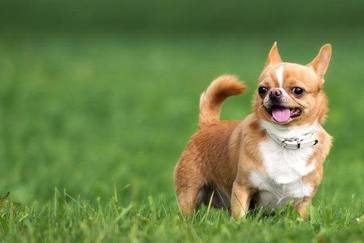
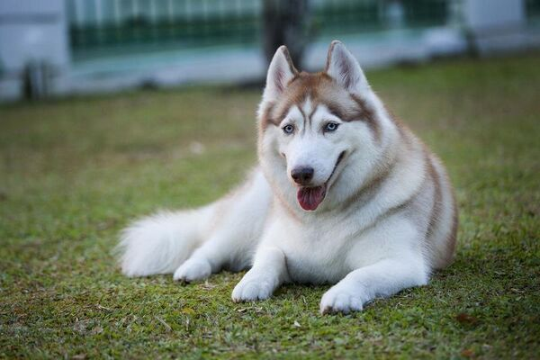
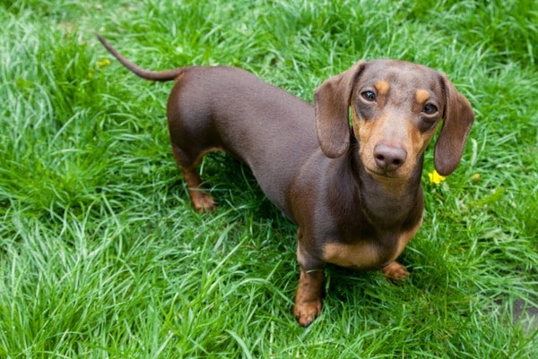
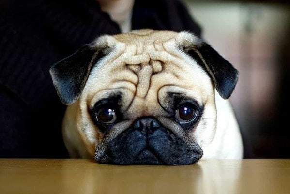

Chó Beagle xuất hiện cách đây từ khoảng 2400 năm về trước và đó là kết
quả của sự lai tạo giữa chó bản địa Anh và chó săn thỏ Talbot. Khoảng
thế kỷ XIX, Beagle du nhập đến Anh Quốc và dần trở nên phổ biến khắp
châu Âu.

Chihuahua là chú chó nhỏ nhất trong mọi loài chó trên thế giới và cũng
là giống chó lâu đời nhất ở châu Mỹ. Chú chó này có nguồn gốc từ
Mexico nhưng lại được cả thế giới biết đến nhờ Trung Quốc. Tên của
chúng được lấy từ tên một bang của Mexico, bang Chihuahuan, là nơi mà
chú chó được tìm thấy.

Siberian Husky, là giống chó có nguồn gốc từ vùng Đông Bắc Siberia,
Nga. Tại đây, từ khoảng hơn 3000 năm trước, chúng đã được tộc người
Chukchi nuôi dưỡng và huấn luyện để giúp đỡ con người trong việc di
chuyển hay vận chuyển hàng hóa.

Chó Lạp xưởng hay còn được gọi với tên tiếng Anh là chó Dachshund, là
giống chó có nguồn gốc từ Đức và được biết đến như một loài chó săn có
kích thước nhỏ.

Nguồn gốc thật sự của những chú chó Pug “mặt xệ” hiện nay vẫn chưa
được xác định. theo nhiều nguồn thông tin thì chú chó “mặt xệ” này đã
xuất hiện từ thời nhà Hán - Trung Quốc vào khoảng những năm 200 TCN.
Lúc bấy giờ, chó Pug được xếp vào dòng dõi quý tộc, được hưởng thụ
cuộc sống xa hoa và những người nuôi chó Pug chủ yếu là quan lại,
hoàng thân, quốc thích Trung Quốc.